Jiffy with Docker and SQLite
Overview
We will create and deploy a sample application using the all-in-one approach inside a Docker container. To make things easy, we will use SQLite as the database, which means that the Dockerfile and entrypoint setup will be quite simple. Note that if you try to do the same thing with one of the other supported databases there will be some additional configuration. Docker containers are typically used to provide single services.
SQLite lets us do all-in-one in Docker, as SQLite is a library facilitating access to a file rather than a database service available at an address:port. Our Dockerfile -> entrypoint only has to start one thing: our application.
Note that this is a setup for testing and development only. When deploying a jiffy-application with Docker, you should use a container clustering/management solution (Docker Swarm, Kubernetes, Rancher …). Doing will simplify application scaling and is also necessary in order to support the peer-to-peer networking requirement.
Steps
- Verify the Jiffy installation.
- Generate a new application using a sample model file from the Jiffy source-tree.
- Edit the application’s configuration file for SQLite and Docker use.
- Statically compile a binary for inclusion in the Docker image.
- Write a simple Dockerfile to create a runnable image.
- Write a small script to update the image’s .dev.config.json file with the container’s ipv4 address
- Create a container from the image and start the container.
- Test access to the application running in the container using Postman.
- Stop the container.
- Cleanup the Docker environment.
Verify Jiffy Installation
Ensure that Jiffy has been installed on your workstation by following the instructions provided in the Jiffy Installation section.
Generate the Application
We will generate a new application from a model file that contains a ‘Library’ and ‘Book’ entity. Two relationships are maintained in the model; a Library hasMany Books and a Book belongsTo a specific Library. An application generated from this model will allow many Jiffy application features to be tested.
Open a terminal window on your workstation and run jiffy using the Library-Book model file to generate the source-code for our test application as follows:
jiffy -m $GOPATH/src/github.com/1414C/jiffy/support/testing_models/hasManyBelongsTo.json -p /exp/libraryapp
Remember that jiffy’s -p flag expects to be provided with an existing path underneath your $GOPATH/src folder. In the example invocation shown above, jiffy will create the libraryapp folder underneath $GOPATH/src/exp/ and then write the generated source-code to this location.
Execution of the generator (jiffy) should result in similar to:
2018/06/15 14:44:11 generated: /Users/stevem/gowork/src/exp/libraryapp/models/librarym.go
2018/06/15 14:44:11 generated: /Users/stevem/gowork/src/exp/libraryapp/models/librarym_ext.go
2018/06/15 14:44:11 generated: /Users/stevem/gowork/src/exp/libraryapp/controllers/libraryc.go
...
...
...
2018/06/15 14:44:13 executing /usr/local/go/bin/goimports -w /Users/stevem/gowork/src/exp/libraryapp/util/strings.go
2018/06/15 14:44:13 executing /usr/local/go/bin/gofmt -w /Users/stevem/gowork/src/exp/libraryapp/util/strings.go
2018/06/15 14:44:13 executing /usr/local/go/bin/goimports -w /Users/stevem/gowork/src/exp/libraryapp/appobj/appconf.go
2018/06/15 14:44:13 executing /usr/local/go/bin/gofmt -w /Users/stevem/gowork/src/exp/libraryapp/appobj/appconf.go
Your output may look slightly different, particularly the database connection test which will almost certainly fail. This is nothing to be concerned about, as the generator is attempting to connect to a local postgres instance using bad credentials.
Edit the Application Configuration File
Update Address Keys
The next step is to edit the generated application’s configuration files. Docker allocates a static ip-address for each container by default, and we will use that address in our application’s configuration file. ‘external_address’ refers to the address at which the application’s end-points will be available, while the ‘internal_address’ is used for cache updates and interprocess communication over web-socket connections. Strictly speaking, in a single-instance Docker deployment we could get away with maintaining the address-keys as follows:
.dev.config.json
{
"external_address": ":8080",
"internal_address": ":4444",
"env": "dev",
...
...
}
However, we will show how to obtain and insert the container’s real ip-address into the configuration file. This will be useful later if you deploy multiple application instances in Docker containers.
Open the generated .dev.config.json file in an editor and update the ‘external_address’ and ‘internal_address’ values with “xxx.xxx.xxx.xxx:8080” and “xxx.xxx.xxx.xxx:4444” respectively. Using an illegal ipv4 address as a placeholder/mask ensures that the container will not start in the event that the container’s address could not be assigned to the config keys. When you have finished, save the file after verifying that it looks like this:
.dev.config.json
{
"external_address": "xxx.xxx.xxx.xxx:8080",
"internal_address": "xxx.xxx.xxx.xxx:4444",
"env": "dev",
...
...
}
Update the Application’s Database Config
Jiffy generates configuration files targeting a Postgres database by default. As we intend to use SQLite in our all-in-one Docker test deployment, the ‘database’ block in .dev.config.json must be updated as follows:
.dev.config.json
{
...
"database": {
"db_dialect": "sqlite",
"host": "",
"port": 0,
"usr": "",
"password": "",
"name": "testdb.db"
},
...
}
Once the database block in .dev.config.json has been updated, save the file and close the editor.
Build a Static Application Binary for Alpine Linux
Next, we need to build a static application binary for linux/amd64. To build the application, a number of dependencies are required as outlined in the Jiffy Dependencies section of the documentation. Check that your build environment contains the correct packages and import any that are missing.
This tutorial uses the popular Alpine Linux distribution as the basis for the new container image. Alpine Linux is a small and sparse distribution making it nice for use with containers. There are a few things to be aware of however…
Alpine Linux is based on lib-musl which means that binaries built by go build must target lib-musl rather than lib-gcc. The binary resulting from the typical ‘GOOS=linux GOARCH=amd64 go build -o main .’ command would almost certainly not work on Alpine. The good news is that it is quite easy to build with musl-gcc, the bad news is that musl-gcc is available for Linux only. If you are working on a system in which lib-musl is not supported, you will need to run the go build command in a supported build environment. Most Linux distributions and architectures are supported.
Check if lib-musl has been installed in the build environment by running the which command:
which musl-gcc
If musl-gcc was found in the $PATH, which will return output similar to:
/usr/bin/musl-gcc
If musl-gcc was not found, follow the installation instructions below to download and install the required packages.
Install Musl-gcc
We will go over how to install musl-gcc on a Debian system, but the steps are largely the same for any Linux distribution. Use your distribution’s package manager to install the musl lib, musl development files and musl development tools. Run the following commands (or their equivalents) in a terminal window on your Linux build system:
sudo apt-get update
sudo apt-get install musl
sudo apt-get install musl-dev
sudo apt-get install musl-tools
Check to make sure that musl-gcc is now in the $PATH:
which musl-gcc
Build a Static Application Binary
After ensuring that all of the required dependencies have been installed in the build environment, run the following command to build a statically-linked binary called main for the Alpine Linux target OS. Setting the CC environment variable to point at musl-gcc ensures that the target (executable) will run in the Alpine Linux environment. Adjust the GOARCH environment variable as necessary:
CGO=0 GOOS=linux GOARCH=amd64 CC=$(which musl-gcc) go build --ldflags '-w -linkmode external -extldflags "-static"' -a -tags netgo -installsuffix cgo -o main .
Running go build with CGO=0 and setting the -a flag forces a rebuild without cross-compilation dependencies. Setting –ldflags as shown instructs go build to produce a statically linked binary. Setting the CC environment variable to point at musl-gcc ensures that the target (executable) will run in the Alpine Linux environment. Once the build has completed, a new ‘main’ file will have been created. Check the file via the file command:
file main
You should see output similar to:
main: ELF 64-bit LSB executable, x86-64, version 1 (SYSV), statically linked, not stripped
Build a Dynamically-Linked Application Binary
This is optional and will produce a marginally smaller binary. We will not use a dynamically-linked binary in our image, but have included a suitable go build command for reference purposes.
CGO=0 GOOS=linux GOARCH=amd64 CC=$(which musl-gcc) go build -a -tags netgo -installsuffix cgo -o main .
Running go build with CGO=0 and setting the -a flag forces a rebuild without cross-compilation dependencies. go build produces dynamically-linked binaries by default, so no linker instructions have been provided. Setting the CC environment variable to point at musl-gcc ensures that the target (executable) will run in the Alpine Linux environment. Once the build has completed, a new ‘main’ file will have been created. Check the file via the file command:
file main
You should see output similar to:
main: ELF 64-bit LSB executable, x86-64, version 1 (SYSV), dynamically linked, interpreter /lib/ld-musl-x86_64.so.1, not stripped
Create a Dockerfile
Verify that you have Docker installed in your build environment. The easiest way to do this is to run which docker in a terminal window to ensure the docker application is in the $PATH. If there is no response, check the $PATH or install Docker following the instructions at www.docker.com. Verify that the Docker daemon is running by opening a terminal window in your build environment and running the docker ps command. If Docker is not running, an error message will be displayed. Start the Docker daemon before continuing.
In order to deploy the compiled all-in-one application in a Docker container, we need to create a Dockerfile. The docker build command uses the Dockerfile as a set of instructions when building an image. As mentioned previously, we will use Alpine Linux as the foundation (base image) for the new Docker container image. Dockerhub has a number of pre-defined images that are available to be ‘pulled’ into locally defined custom images.
Create a new file called Dockerfile in the root folder of the libraryapp source-tree and open it in your editor. Copy the following content into the new Dockerfile. An effort has been made to briefly describe what each line of the Dockerfile is used for.
# use the official docker hub alpine:3.7 base image
FROM alpine:3.7
# set the maintainer information for the new image
LABEL maintainer="<stevem@1414c.io>"
# add the compiled application binary to the root folder of the new image
ADD main ./
# copy the configuration file to the root folder of the new image
COPY .dev.config.json .
# add the entrypoint.sh shell script to the root folder of the new image
ADD docker-entrypoint.sh .
# set widely exectuable permission on the shell-script
RUN /bin/chmod 777 docker-entrypoint.sh
# create a directory in the root folder of the new image to hold the jwt signing keys
RUN mkdir jwtkeys
# copy the jwtkeys folder content into the image's /jwtkeys folder
COPY jwtkeys ./jwtkeys
# set container environment variable $PORT to 8080
ENV PORT 8080
# container will listen on port tcp/8080
EXPOSE 8080
# install sqlite3 into the image
RUN apk update \
&& apk add sqlite \
&& apk add socat
# add unix file command
RUN apk add file
# create a test.db file in the root folder (don't really need to do this, but it is a nice test when getting started)
RUN /usr/bin/sqlite3 /test.db
# set the container entrypoint - container executes this once it is up and running
ENTRYPOINT ["/docker-entrypoint.sh"]
# specify the flag(s) to be used with the ENTRYPOINT
CMD ["-dev"]
Create the Entrypoint Script
In a previous step .dev.config.json was updated with xxx.xxx.xxx.xxx ipv4 address masks. In order to replace the masks with the container’s ipv4 address, docker run and docker start will execute the docker-entrypoint.sh when creating a container instance based on the image definition. At the moment this is a problem however, as we have not written the script yet. Create a new file called docker-entrypoint.sh in the root folder of the libraryapp source-tree and open it in your editor. Copy the following content into the new docker-entrypoint.sh file:
#!/bin/sh
# get the ipv4 address assigned to eth0
replace=$(ifconfig eth0 | grep "inet addr" | cut -d ':' -f 2 | cut -d ' ' -f 1)
# set a variable with the value we are planning to replace
search="xxx.xxx.xxx.xxx"
# check that variable replace has something in it
if [ -z "$replace" ]; then
echo "Did not get an address value for eth0"
elif [ -n "$replace" ]; then
echo "${replace} found"
# replace all instances of 'xxx.xxx.xxx.xxx' in .dev.config.json
# with the ipv4 address in the ${replace} variable
sed -i "s/${search}/${replace}/g" .dev.config.json
exec /main "$@"
fi
Note that the docker-entrypoint.sh script assumes the ipv4 address should be read from the eth0 interface. This may not be the case in more complex deployments.
Build the Image
Assuming the previous steps have been successful, it is now time to build the new Docker image. Execute the following command from the libraryapp root folder:
docker build -t libraryapp .
Running docker build as shown instructs Docker to construct an image called libraryapp using the Dockerfile in the current working directory. You should see output similar to:
Sending build context to Docker daemon 16.41MB
Step 1/17 : FROM alpine:3.7
---> 3fd9065eaf02
Step 2/17 : LABEL maintainer="<stevem@1414c.io>"
---> Using cache
---> 79c0d43a29f9
Step 3/17 : ADD main ./
---> a7e7dce67f50
Step 4/17 : COPY .dev.config.json .
---> c5822b775472
Step 5/17 : ADD docker-entrypoint.sh .
---> dc5f95101182
Step 6/17 : RUN /bin/chmod 777 docker-entrypoint.sh
---> Running in 77137cc55a5c
Removing intermediate container 77137cc55a5c
---> dbaf6e72994a
Step 7/17 : RUN mkdir jwtkeys
---> Running in 14818b929ee8
Removing intermediate container 14818b929ee8
---> f90bb5e8d516
Step 8/17 : COPY jwtkeys ./jwtkeys
---> b1f7dbcb7f99
Step 9/17 : ENV PORT 8080
---> Running in b5f273f638f4
Removing intermediate container b5f273f638f4
---> 48ad91d892a2
Step 10/17 : EXPOSE 8080
---> Running in 16494e968402
Removing intermediate container 16494e968402
---> 7b9ad3d367ad
Step 11/17 : RUN apk update && apk add sqlite && apk add socat
---> Running in 52ca734359f8
fetch http://dl-cdn.alpinelinux.org/alpine/v3.7/main/x86_64/APKINDEX.tar.gz
fetch http://dl-cdn.alpinelinux.org/alpine/v3.7/community/x86_64/APKINDEX.tar.gz
v3.7.0-215-g16971064c0 [http://dl-cdn.alpinelinux.org/alpine/v3.7/main]
v3.7.0-207-gac61833f9b [http://dl-cdn.alpinelinux.org/alpine/v3.7/community]
OK: 9054 distinct packages available
(1/5) Installing ncurses-terminfo-base (6.0_p20171125-r0)
(2/5) Installing ncurses-terminfo (6.0_p20171125-r0)
(3/5) Installing ncurses-libs (6.0_p20171125-r0)
(4/5) Installing readline (7.0.003-r0)
(5/5) Installing sqlite (3.21.0-r1)
Executing busybox-1.27.2-r7.trigger
OK: 13 MiB in 16 packages
(1/1) Installing socat (1.7.3.2-r3)
Executing busybox-1.27.2-r7.trigger
OK: 13 MiB in 17 packages
Removing intermediate container 52ca734359f8
---> a67a51781543
Step 12/17 : RUN apk add file
---> Running in 51824f0e8666
(1/2) Installing libmagic (5.32-r0)
(2/2) Installing file (5.32-r0)
Executing busybox-1.27.2-r7.trigger
OK: 18 MiB in 19 packages
Removing intermediate container 51824f0e8666
---> c529b1a51fbb
Step 13/17 : RUN apk add busybox-extras
---> Running in ff07237bfbea
(1/1) Installing busybox-extras (1.27.2-r11)
Executing busybox-extras-1.27.2-r11.post-install
Executing busybox-1.27.2-r7.trigger
OK: 18 MiB in 20 packages
Removing intermediate container ff07237bfbea
---> 93f5024f2a17
Step 14/17 : RUN apk add openssh-client
---> Running in 7ea7c5e2197a
(1/2) Installing openssh-keygen (7.5_p1-r8)
(2/2) Installing openssh-client (7.5_p1-r8)
Executing busybox-1.27.2-r7.trigger
OK: 21 MiB in 22 packages
Removing intermediate container 7ea7c5e2197a
---> 63dfd0feacfc
Step 15/17 : RUN /usr/bin/sqlite3 /test.db
---> Running in e1215daeac5c
Removing intermediate container e1215daeac5c
---> e3339d8ca07e
Step 16/17 : ENTRYPOINT ["/docker-entrypoint.sh"]
---> Running in cb7231e2f911
Removing intermediate container cb7231e2f911
---> 43f23ae635c7
Step 17/17 : CMD ["-dev"]
---> Running in cd1245631529
Removing intermediate container cd1245631529
---> 5ef02199fb7e
Successfully built 5ef02199fb7e
Successfully tagged libraryapp:latest
Aardvark:libraryapp stevem$
View the Image
You can run the docker image command to view some basic data regarding the new image:
docker image ls library*
You should see output simialar to:
REPOSITORY TAG IMAGE ID CREATED SIZE
libraryapp latest 5ef02199fb7e Less than a second ago 23.6MB
Use the Image
Once the image has been created, the next step is to use it to create a container. This can be done in a single step where Docker creates the container and then starts it. Run the following command to create and start a new container from the libraryapp image:
docker run --name libraryapp -p 8080:8080 -d libraryapp
If all went well, docker created a container from the libraryapp image and then started it. The flags provided with the docker run command do the following:
- –name - the image to use
- -p - used to bind the host’s tcp/8080 port to container port tcp/8080
- -d - detach the container from the starting session
Check the Container Status
Container status can be checked via the docker ps command:
docker ps -a
You should see output similar to:
CONTAINER ID IMAGE COMMAND CREATED STATUS PORTS NAMES
532180e4716c libraryapp "/main -dev" About an hour ago Up About an hour 0.0.0.0:8080->8080/tcp libraryapp
The output of the command shows that the libraryapp container was started with entrypoint ‘/main -dev’ and that container port :8080 is mapped to host port :8080. For a discussion of what to do if the container entrypoint fails, see the Troubleshooting section of this document.
SSH into the Container
We can ssh into the running container to see what is going on using the command shown in the following terminal session. The command logs in as root using the specified interactive shell (in this case /bin/sh). Check that ‘main -dev’ is running as expected using the Linux ps command.
docker exec -it libraryapp /bin/sh
/ # ps -ef
PID USER TIME COMMAND
1 root 0:13 /main -dev
25 root 0:00 /bin/sh
31 root 0:00 ps -ef
/ #
Take a look around the in the container environment and verify that the content of .dev.config.json has been updated with the correct ip-address using the ifconfig/cat commands. Remember that the docker container is created with a static ipv4 address assigned to the eth0 interface. Verify that the eth0 ipv4 address has been added to the ‘external_address’ and ‘internal_address’ keys in .dev.config.json.
/ # ifconfig
eth0 Link encap:Ethernet HWaddr 02:42:AC:11:00:02
inet addr:172.17.0.2 Bcast:172.17.255.255 Mask:255.255.0.0
UP BROADCAST RUNNING MULTICAST MTU:1500 Metric:1
RX packets:234 errors:0 dropped:0 overruns:0 frame:0
TX packets:214 errors:0 dropped:0 overruns:0 carrier:0
collisions:0 txqueuelen:0
RX bytes:14515 (14.1 KiB) TX bytes:13329 (13.0 KiB)
lo Link encap:Local Loopback
inet addr:127.0.0.1 Mask:255.0.0.0
UP LOOPBACK RUNNING MTU:65536 Metric:1
RX packets:55613 errors:0 dropped:0 overruns:0 frame:0
TX packets:55613 errors:0 dropped:0 overruns:0 carrier:0
collisions:0 txqueuelen:1
RX bytes:9736184 (9.2 MiB) TX bytes:9736184 (9.2 MiB)
/ # cat .dev.config.json
{
"external_address": "172.17.0.2:8080",
"internal_address": "172.17.0.2:4444",
"env": "dev",
...
...
...
"service_name": "Book",
"service_active": true
}
]
}/ #
Login to the Application
Launch Postman or your favorite RESTful service testing tool and specify a target URL of: http://172.17.0.2:8080/usr/login making sure to select the http POST method. Maintain the request body to provide a user-id and password as shown in the following JSON snippet. Typically the user-id for a jiffy application is an email address, but an exception is made for the default administration user definition.
{
"email": "admin",
"password": "initpass"
}
When you have finished and your Postman (or other test utility) looks like the following image, click the ‘Send’ button to post your login request to the running application. 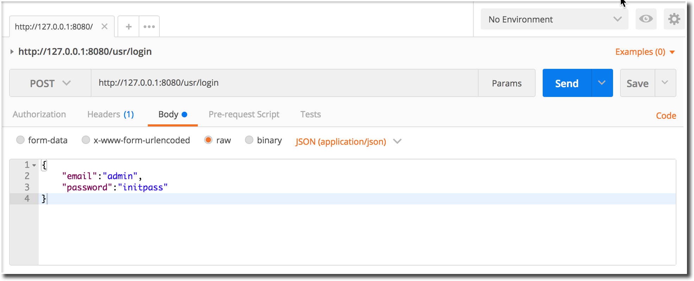
If all goes well, you will get a http response code of 200 (status ok), and a block of JSON with a single ‘token’ tag containing a jumble of letters and numbers. This is the JWT that will be used to validate the ‘admin’ user’s authorization to access the ‘Library’ and ‘Book’ entity service end-points. If you want to read more about JWT’s, jwt.io is a good place to start, or you can refer to the Access Control section of this document set.
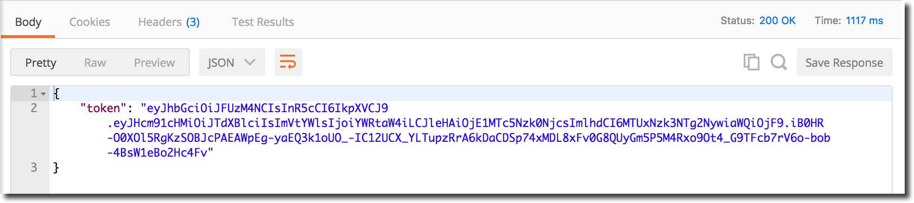
Create a Library
We will create a new ‘Library’ entity. Configure your test-tool to POST to the ‘library’ service as shown in the following image:
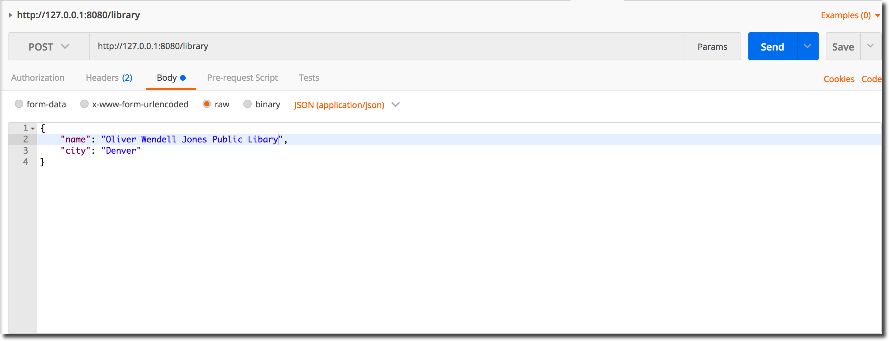
Copy the JWT from the login session and paste it into the new POST request’s Authorization header field as shown below and then submit the request to the application.
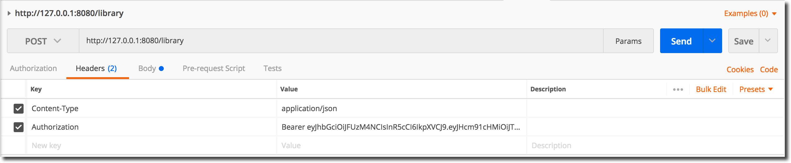
Following submission, a new ‘Library’ entity should have been created:
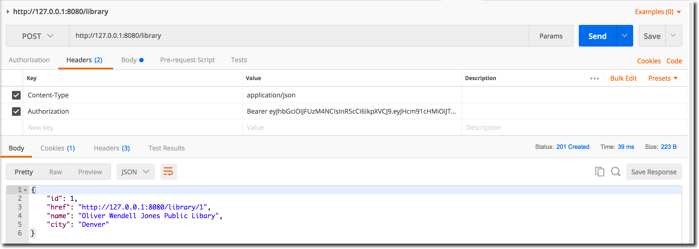
Create another ‘Library’ entity using the ‘Create a Library’ steps and then request a list of Library entities using the GET ../librarys end-point:
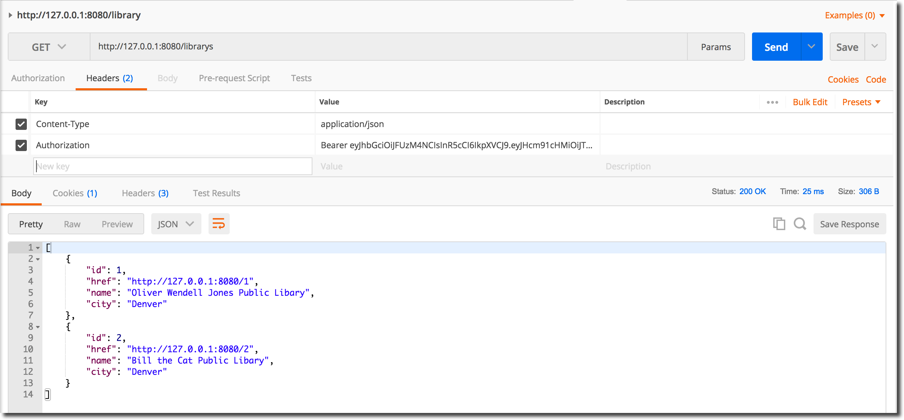
Create a Book
Next, we will create a ‘Book’ entity and allocate it to ‘Library’ 1. Configure your test-tool to POST to the ‘book’ service as shown in the following image:
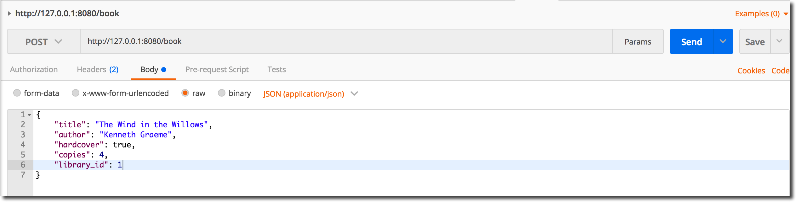
Following the submission, a new ‘Book’ entity should have been created:
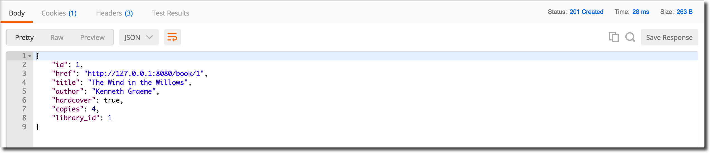
Create a few more ‘Book’ entities using the ‘Create a Book’ steps and allocate them to your ‘Library’ entities. When you have finished, request a list of ‘Book’ entities using the GET ../books end-point:

Library toBooks
Based on the ‘hasMany’ relationship between the ‘Library’ and ‘Book’ entity’s, we can get the number of ‘Book’ entities belonging to ‘Library’ 1 as follows:
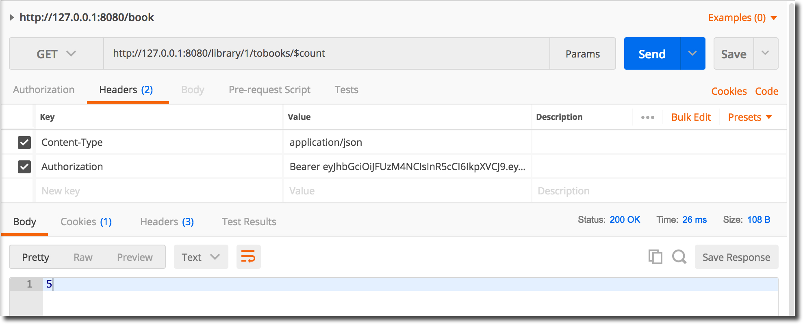
Remove the $count suffix from the URL to get the complete list of Book entities belonging to ‘Library’ 1:
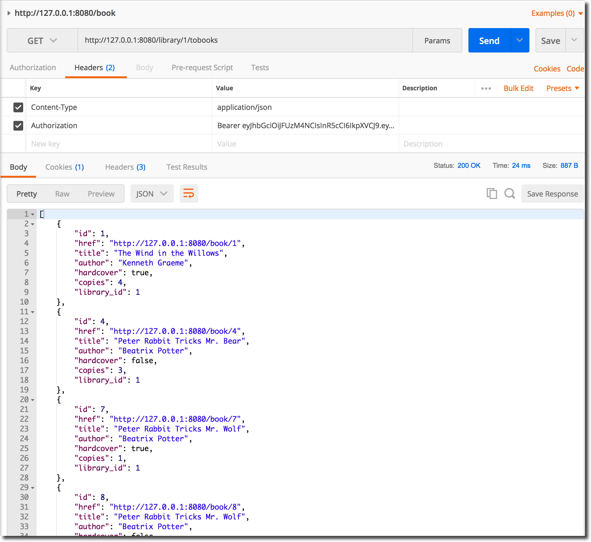
Book toLibrary
A reciprocal ‘belongsTo’ relationship exists between the ‘Book’ and ‘Library’ entity definitions. Select a ‘Book’ entity and verify that the ‘belongsTo’ relationship works as expected:
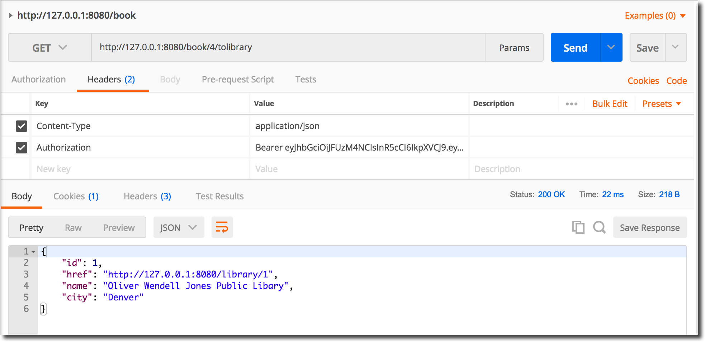
Check the list of filters and commands along with the Library and Book models to see what can be appended to the the service end-points. Try some things out.